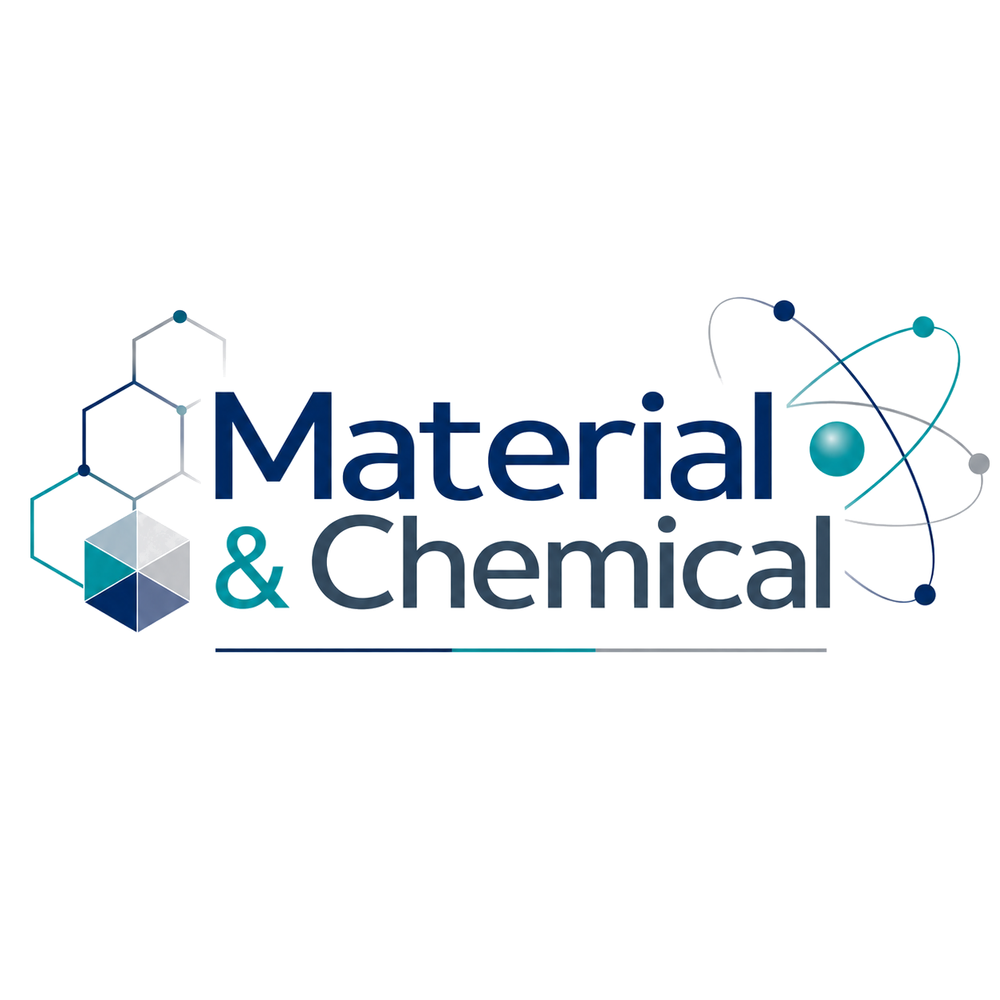

FNMR 학부 연구생
ALD 박막 증착과 TGV 기반 유리기판 공정을 중심으로 차세대 반도체 패키징 기술을 탐구합니다. 공정 조건과 소재·구조의 관계를 이해하고, 고종횡비 via 및 박막 균일도 관점에서 연구 역량을 키우고 있습니다.
- 키워드: ALD, TGV, Glass Core Substrate, Thin Film
- 중점: 공정 이해, 박막 증착, 유리기판 기반 패키징

Yoo Min SungProject
반도체 공정, 소재, 패키징, 디스플레이를 중심으로 쌓아온 주요 활동을 정리했습니다.
ALD 박막 증착과 TGV 기반 유리기판 공정을 중심으로 차세대 반도체 패키징 기술을 탐구합니다. 공정 조건과 소재·구조의 관계를 이해하고, 고종횡비 via 및 박막 균일도 관점에서 연구 역량을 키우고 있습니다.
반도체 제조 공정의 전체 흐름과 주요 단위공정, 불량 분석 관점을 학습했습니다. 공정 변수와 결함 발생 원인을 연결해 이해하는 데 초점을 두었습니다.
시험·평가 기관의 실무 환경을 경험하며 기술 신뢰성, 문서화, 장비 기반 업무 프로세스에 대한 이해를 높였습니다.
디스플레이 소자, 공정, 재료에 대한 중급 교육을 수료하며 반도체와 전자재료 분야를 연결해 이해하는 기반을 넓혔습니다.